EPSX คู่มือใช้งานภาพรวมEPSX / คู่มือใช้งานภาพรวม 14 กันยายน 2569START HERE
คู่มือใช้งาน EPSX
เริ่มต้นสำรวจบริษัท จัดการบัญชี และรู้จัก EPSX Pay กับส่วนผู้ดูแลระบบ
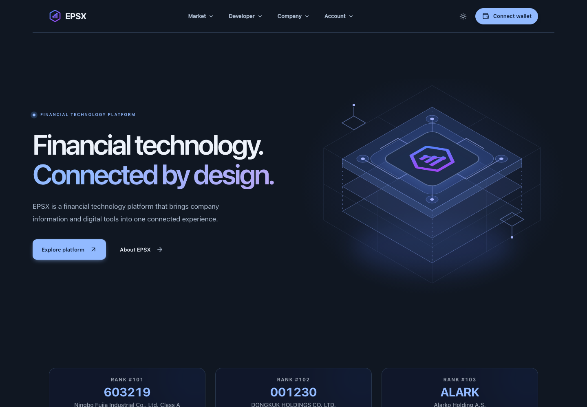
ภาพ 1 • หน้าแรก EPSX / localhost:3000สำหรับผู้ใช้งาน
เข้าสู่ระบบด้วยกระเป๋าเงิน สำรวจอันดับบริษัท บันทึกบริษัทที่ติดตาม และเลือกแพ็กเกจที่ตรงกับการใช้งาน
สำหรับร้านค้าและผู้ดูแล
รู้จักขั้นตอนรับชำระเงิน เมนูร้านค้า และขอบเขตของ Admin ก่อนเริ่มใช้งาน
ภาพจริงจากระบบพัฒนา ณ วันที่จัดทำ ตัวเลข ราคา และสิทธิ์ในภาพเป็นข้อมูลขณะบันทึกหน้าจอ ให้ตรวจค่าล่าสุดในระบบก่อนใช้งาน
อ่านตามลำดับ: เข้าสู่ระบบ 02 • สำรวจบริษัท 03 • ดูหุ้นละเอียด 04-07 • แพ็กเกจ 08 • บัญชีและ API 09 • Admin 10 • Pay 11 • ร้านค้า 12 • แก้ปัญหา 13
EPSX / คู่มือใช้งานภาพรวม 14 กันยายน 256901 / SIGN IN
เชื่อมต่อกระเป๋าและเข้าสู่ระบบ
ใช้กระเป๋าเงินเดิมทุกครั้ง เพื่อกลับมาที่บัญชีและรายการของคุณ
ภาพ 2 • หน้าลงชื่อเข้าใช้ /auth • บันทึกก่อนเชื่อมต่อกระเป๋า- จากหน้าแรก กด Connect wallet เพื่อเปิดหน้าเข้าสู่ระบบ
- กด Sign in with wallet แล้วเลือกบัญชีในกระเป๋าที่ต้องการใช้งาน
- ตรวจข้อความยืนยันตัวตนในกระเป๋า แล้วลงลายเซ็นเพื่อเข้าสู่ระบบ
- เมื่อยืนยันสำเร็จ ระบบจะกลับไปยังหน้าที่ต้องการเปิดก่อนหน้า
หากยังไม่ลงชื่อเข้าใช้ การเปิด Saved companies จะนำมาที่หน้าลงชื่อเข้าใช้ กระเป๋าสำหรับ Admin ต้องมีสิทธิ์ผู้ดูแลเพิ่มเติม
การลงลายเซ็นเข้าสู่ระบบเป็นขั้นตอนยืนยันตัวตน หากมีคำขอทำธุรกรรมให้ตรวจวัตถุประสงค์และรายละเอียดแยกต่างหาก
EPSX / คู่มือใช้งานภาพรวม 14 กันยายน 256902 / EXPLORE
สำรวจและติดตามบริษัท
เปิด Market → Explore หรือกด Explore platform จากหน้าแรก
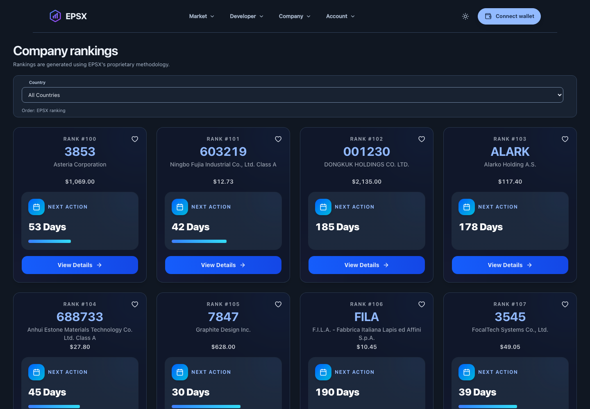
ภาพ 3 • Company rankings /analytics • สถานะผู้เยี่ยมชม- เลือกประเทศจาก Country เพื่อดูข้อมูลที่มีในประเทศนั้น หากแสดงปุ่ม Update country ให้กดเพื่อใช้ตัวกรอง
- อ่านการ์ดบริษัท: Rank, สัญลักษณ์บริษัท, ชื่อ, ราคา และ Next action
- กด View Details เพื่อเปิดรายละเอียดหุ้นบน TradingView ในแท็บใหม่
- เมื่อลงชื่อเข้าใช้แล้ว กดรูปหัวใจเพื่อบันทึกบริษัท และเปิด Market → Saved companies เพื่อกลับมาดูรายการ
อันดับและจำนวนบริษัทที่มองเห็นขึ้นกับสิทธิ์ของบัญชี ไม่จำเป็นต้องเริ่มที่อันดับ 1 ทุกคน การจัดกลุ่มรายการที่บันทึกใช้หน้า Saved companies
EPSX / คู่มือใช้งานภาพรวม 14 กันยายน 256902 / STOCKS IN DETAIL
อ่านการ์ดหุ้นทีละจุด
การ์ดหนึ่งใบสรุปข้อมูลบริษัทหนึ่งรายการ อ่านจากบนลงล่างก่อนเปิดรายละเอียด
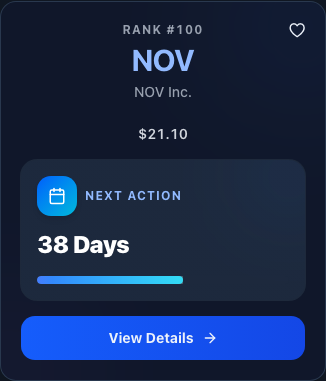
ภาพ 4 • การ์ดหุ้นหลังเลือก United States • จับภาพเฉพาะองค์ประกอบจริง| ข้อมูลบนการ์ด | อ่านอย่างไร |
|---|
| Rank | อันดับที่ EPSX แสดงตามวิธีจัดอันดับของระบบ ใช้ประกอบการสำรวจรายการ |
| Symbol / ชื่อบริษัท | รหัสหุ้นตัวใหญ่และชื่อบริษัทด้านล่าง ใช้ตรวจว่ากำลังดูบริษัทใด โดยเฉพาะรหัสที่อาจคล้ายกัน |
| ราคา | ราคาที่ระบบส่งมาแสดงขณะเปิดหน้า อ่านสัญลักษณ์สกุลเงินควบคู่กัน หน้าไม่ได้ระบุเวลาราคาล่าสุดบนการ์ด |
| หัวใจ / View Details | หัวใจใช้บันทึกบริษัท ส่วน View Details เปิดข้อมูลต่อบน TradingView ในแท็บใหม่ |
หากต้องการดูกราฟต่อ ให้กด View Details แล้วตรวจชื่อบริษัทและตลาดในหน้าปลายทาง ลิงก์ปัจจุบันส่งรหัสหุ้นไปยัง TradingView โดยไม่ได้ระบุรหัสตลาดร่วมด้วย
EPSX / คู่มือใช้งานภาพรวม 14 กันยายน 256902 / STOCKS IN DETAIL
เปิดรายละเอียดและบันทึกหุ้น
เลือกบริษัทที่ต้องการ แล้วใช้ปุ่มบนการ์ดเพื่อไปต่อ
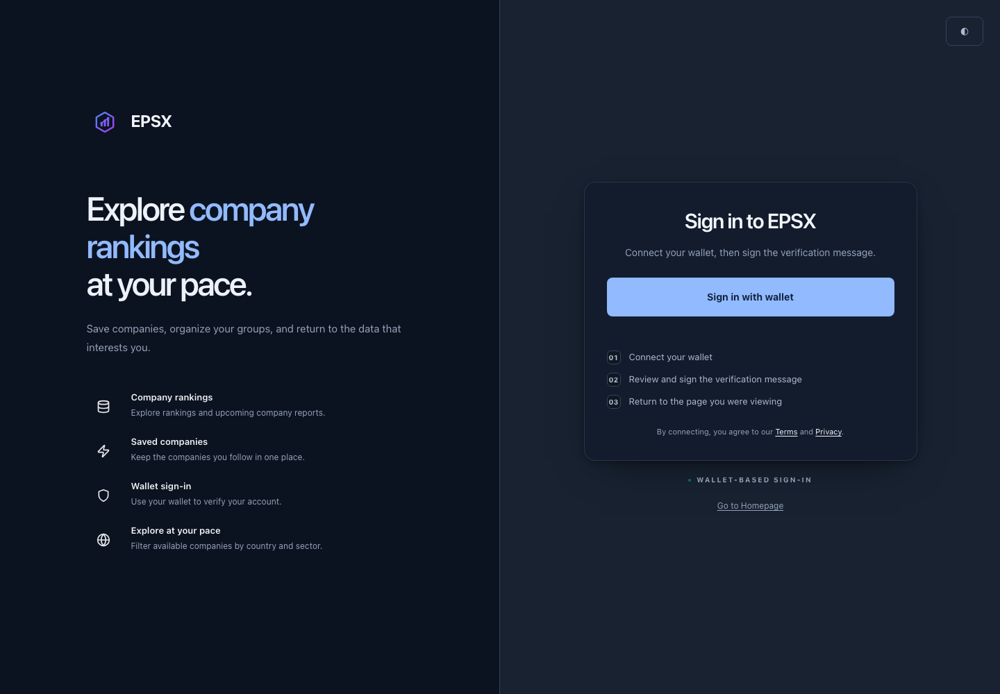
ภาพ 5 • กดหัวใจจากการ์ดหุ้นในสถานะผู้เยี่ยมชม ระบบเปิดหน้าลงชื่อเข้าใช้ดูรายละเอียดหุ้นต่อ
- ตรวจ Symbol และชื่อบริษัทบนการ์ดให้ตรงกับหุ้นที่สนใจ
- กด View Details ระบบกำหนดให้เปิด TradingView ในแท็บใหม่ ตรวจชื่อบริษัทและตลาดที่หน้าปลายทางก่อนอ่านต่อ
- กลับมาที่แท็บ EPSX เมื่อต้องการเปรียบเทียบหุ้นรายการอื่น
เก็บหุ้นไว้ติดตาม
กดรูปหัวใจบนการ์ด หากยังไม่ลงชื่อเข้าใช้จะเข้าสู่หน้า Sign in ตามภาพ หลังเข้าสู่ระบบแล้วให้ตรวจว่าบริษัทถูกบันทึกหรือยัง และกดบันทึกหากจำเป็น จากนั้นเปิด Market → Saved companies เพื่อดูรายการที่เก็บไว้
การลองครั้งนี้ยืนยันว่ากดหัวใจแล้วเปิดหน้าลงชื่อเข้าใช้พร้อมเส้นทางกลับ Analytics ได้ ยังไม่ได้ลงลายเซ็นหรือบันทึกข้อมูลจริง และไม่ได้ตรวจเนื้อหาของเว็บ TradingView
EPSX / คู่มือใช้งานภาพรวม 14 กันยายน 256902 / STOCKS IN DETAIL
กรองหุ้นตามประเทศ
ตัวอย่างการเลือก Thailand จากตัวกรอง Country
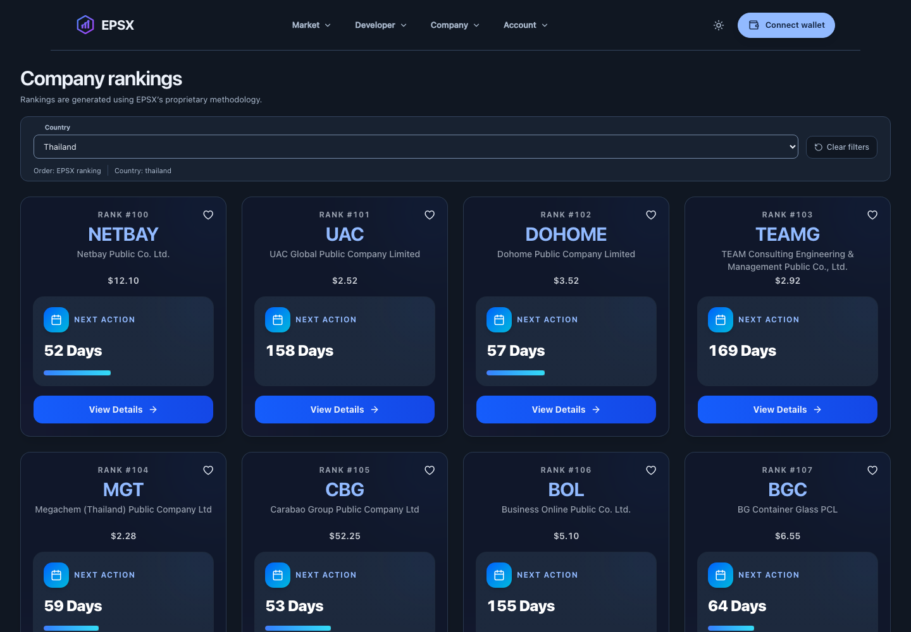
ภาพ 6 • ผลลัพธ์หลังเลือก Thailand บนระบบที่อัปเดตแล้ว- เปิด Market → Explore แล้วกดช่อง Country
- เลือก Thailand หรือประเทศที่ต้องการ ระบบที่พร้อมใช้งานจะอัปเดตผลลัพธ์ให้ หากเห็นปุ่ม Update country ให้กดปุ่มนั้น
- ตรวจว่าชื่อประเทศในช่องเปลี่ยนแล้ว และอ่านรายการหุ้นชุดใหม่ โดยการเปลี่ยนประเทศจะเริ่มที่หน้า 1
- เลือก All Countries เพื่อกลับไปดูทุกประเทศที่มีข้อมูล
บางประเทศไม่มีผลลัพธ์ในช่วงอันดับที่บัญชีเข้าถึงได้ ซึ่งต่างจากการโหลดผิดพลาด ให้ตรวจช่วงสิทธิ์ใต้รายการ หรือเลือกประเทศอื่น
หน้าที่บันทึกภาพมีตัวกรอง Country และแสดง Order: EPSX ranking ไม่พบช่องค้นหาชื่อหุ้นหรือตัวกรอง Sector ในหน้าตานี้
EPSX / คู่มือใช้งานภาพรวม 14 กันยายน 256902 / STOCKS IN DETAIL
เปลี่ยนหน้าและตรวจช่วงอันดับ
เลื่อนลงท้ายรายการหุ้น เพื่อดูจำนวนผลลัพธ์และสิทธิ์ที่ใช้แสดงข้อมูล
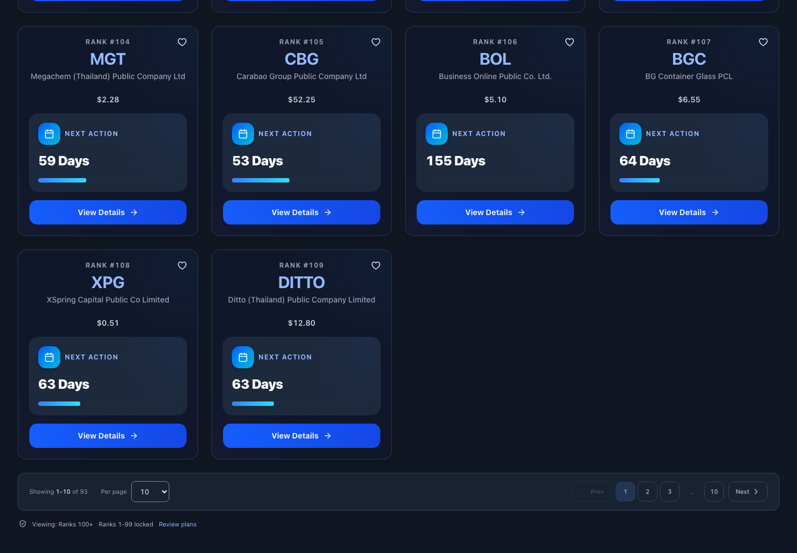
ภาพ 7 • ส่วนท้ายรายการหุ้น Thailand และช่วงสิทธิ์ที่เข้าถึงได้- Showing แสดงลำดับรายการที่กำลังดูและจำนวนผลลัพธ์ทั้งหมดในช่วงที่เข้าถึงได้ ตัวเลขเปลี่ยนตามประเทศและข้อมูลล่าสุด
- ใช้ Next / Prev หรือเลขหน้าเพื่อเลื่อนดูรายการชุดถัดไปหรือย้อนกลับ
- เลือก Per page เพื่อปรับจำนวนต่อหน้า ตัวเลือกที่พบคือ 10, 25, 50 และ 100 หากมีปุ่ม Apply page size ให้กดเพื่อยืนยัน
- อ่าน Viewing: Ranks 100+ และ Ranks 1-99 locked เพื่อทราบขอบเขตสิทธิ์ของ session นี้ กด Review plans หากต้องการเปรียบเทียบแพ็กเกจ
เลขรายการ Showing และเลข Rank ทำหน้าที่ต่างกัน รายการแรกที่มองเห็นอาจเป็น Rank 100 แม้ Showing เริ่มที่ 1 การเปลี่ยนหน้าไม่ได้ปลดล็อกอันดับที่บัญชีไม่มีสิทธิ์
EPSX / คู่มือใช้งานภาพรวม 14 กันยายน 256903 / PLANS
เลือกแพ็กเกจและตรวจสิทธิ์
เปิด Market → Plans เพื่อเปรียบเทียบเงื่อนไขก่อนชำระเงิน
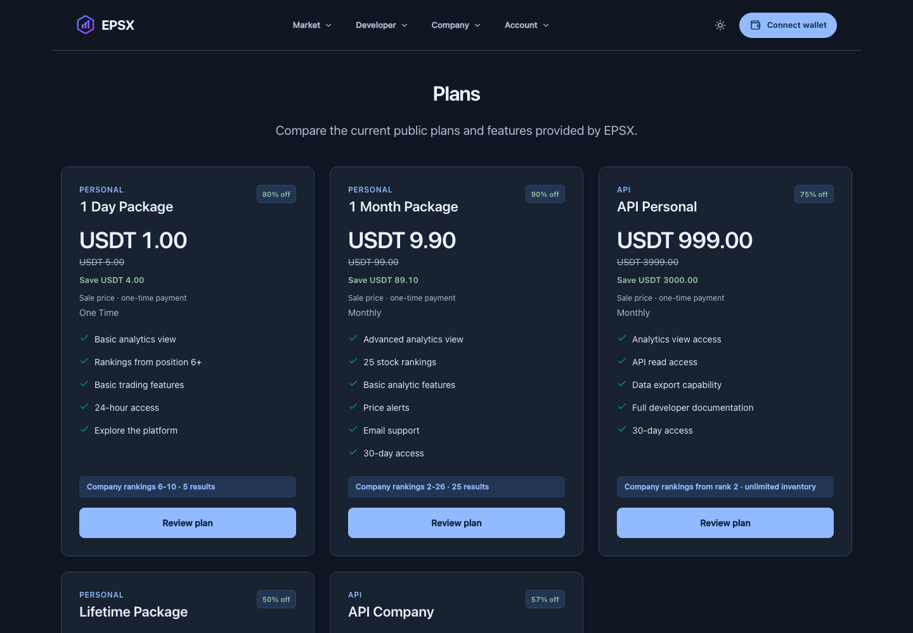
ภาพ 8 • Plans /plans • แสดงบางส่วนของรายการแพ็กเกจ- เปรียบเทียบชื่อแพ็กเกจ ราคา ระยะเวลา และรายการคุณสมบัติที่แสดง
- ตรวจช่วงอันดับและจำนวนผลลัพธ์ในบรรทัด Company rankings รวมถึงสิทธิ์ API หากต้องใช้
- กด Review plan ของแพ็กเกจที่ต้องการ แล้วตรวจรายละเอียดในหน้าชำระเงิน
- หลังดำเนินการ ให้เปิด Account → Purchases เพื่อตรวจรายการ และ Account → Access เพื่อตรวจสิทธิ์
ภาพนี้ใช้ประกอบตำแหน่งเมนูและข้อมูลที่ต้องอ่านเท่านั้น ราคา โปรโมชัน และเงื่อนไขอาจเปลี่ยนได้ หากชำระแล้วสิทธิ์ยังไม่แสดง ให้ตรวจสถานะรายการก่อนทำซ้ำ
EPSX / คู่มือใช้งานภาพรวม 14 กันยายน 256904 / ACCOUNT & DEVELOPER
บัญชี รายการย้อนหลัง และ API
ใช้เมนู Account สำหรับบัญชี และ Developer สำหรับงานเชื่อมต่อข้อมูล
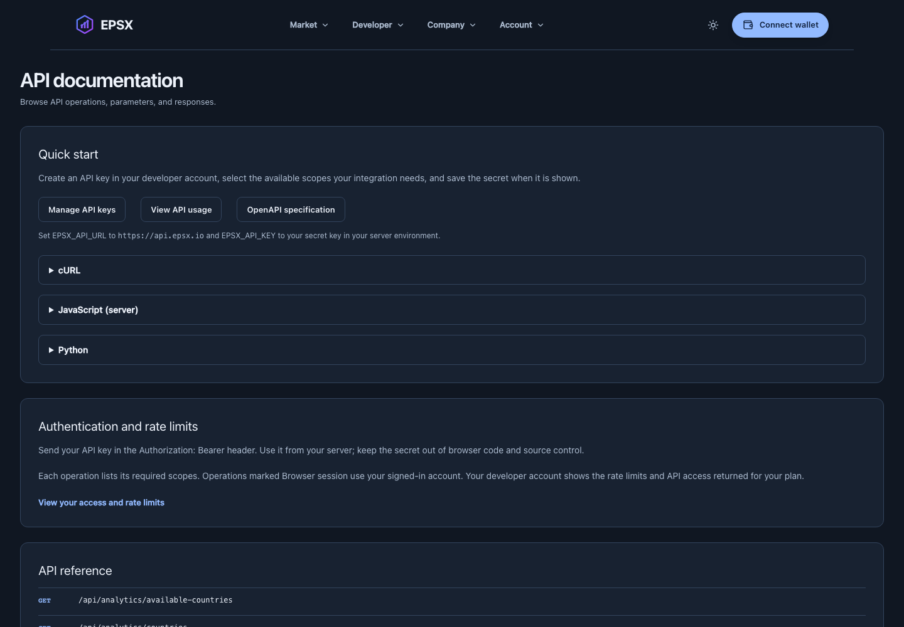
ภาพ 9 • API documentation /developer/docsเมนูบัญชีที่ใช้บ่อย
Profile / Settings ข้อมูลบัญชีและการตั้งค่า
Access สิทธิ์ของบัญชี
Credits เครดิต
Purchases รายการซื้อย้อนหลัง
เริ่มใช้ Developer
เปิด API keys เพื่อจัดการคีย์ตามสิทธิ์ของบัญชี ใช้ API usage ตรวจการใช้งาน และอ่าน API documentation ก่อนเชื่อมต่อ
เก็บ API secret เมื่อระบบแสดง และใช้จากฝั่งเซิร์ฟเวอร์ เอกสาร API ระบุสิทธิ์ของแต่ละคำสั่ง คำสั่งที่ใช้ Browser session ต้องลงชื่อเข้าใช้ตามที่ระบบกำหนด
ภาพเป็นหน้าเอกสารสาธารณะ ส่วนข้อมูลบัญชีและการสร้างคีย์ต้องเข้าสู่ระบบ และไม่ได้ดำเนินการในการจัดทำคู่มือครั้งนี้
EPSX / คู่มือใช้งานภาพรวม 14 กันยายน 256905 / ADMIN
เริ่มต้นใช้งานส่วนผู้ดูแล
เข้าเว็บไซต์ Admin แล้วเชื่อมต่อกระเป๋าที่ได้รับสิทธิ์จากผู้ดูแลระบบ
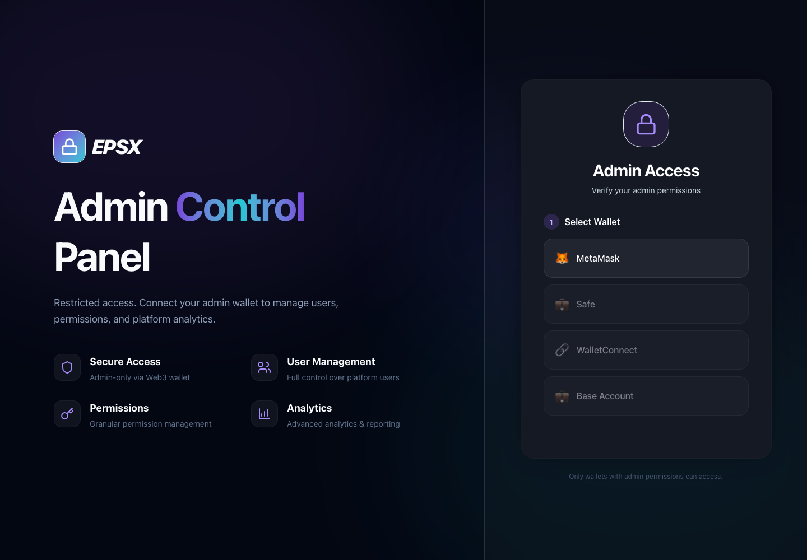
ภาพ 10 • Admin sign in / localhost:3001/auth- เปิดหน้า Admin และเลือกกระเป๋าจากหน้าลงชื่อเข้าใช้
- ตรวจบัญชีและข้อความยืนยันตัวตนก่อนลงลายเซ็น
- เมื่อระบบตรวจสิทธิ์สำเร็จ จึงเข้าถึงเมนูที่ได้รับอนุญาต
งานดูแลบัญชี
กลุ่ม Wallet management ใช้ดูบัญชีกระเป๋า สิทธิ์ แพ็กเกจ และเครดิต โดยเลือกบัญชีเป้าหมายก่อนตรวจรายละเอียด
งานดูแลแพลตฟอร์ม
มีส่วนรายการชำระเงิน, Pay escrow, ข่าว, การแจ้งเตือน, การสนทนา, Developer และ Audit log ตามสิทธิ์
ภาพยืนยันเฉพาะหน้าเข้าสู่ระบบ รายชื่อกลุ่มงานอ้างอิงจากเส้นทางหน้าจอในโค้ด ยังไม่ได้เข้าหน้าภายในหรือแก้ไขข้อมูลผู้ใช้
EPSX / คู่มือใช้งานภาพรวม 14 กันยายน 256906 / EPSX PAY
รู้จัก EPSX Pay
พื้นที่สำหรับร้านค้าที่ต้องการรับชำระเงินผ่านลิงก์และหน้าชำระเงิน
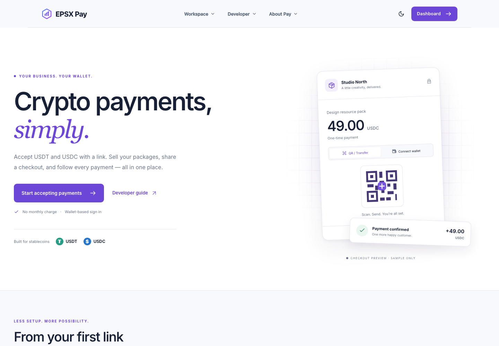
ภาพ 11 • หน้าแรก EPSX Pay / localhost:3002- กด Start accepting payments หรือ Dashboard เพื่อเข้าสู่พื้นที่ร้านค้า
- เชื่อมต่อ MetaMask ลงลายเซ็นเข้าสู่ระบบ และตั้งชื่อร้านตามขั้นตอนบนหน้าจอ
- เตรียมแพ็กเกจหรือ Payment link แล้วแชร์หน้าชำระเงินให้ลูกค้า
- ติดตามผลผ่านหน้า Payments และตรวจสถานะรับเงินเข้ากระเป๋า
ตัวอย่าง checkout บนหน้าแรกเป็นภาพสาธิตของเว็บไซต์ (Sample only) ไม่ใช่หลักฐานชำระเงินจริง ระบบพัฒนามี Test environment ให้แยกจาก Live
ร้านค้าหนึ่งร้านผูกกับกระเป๋าเจ้าของและกระเป๋ารับเงินเดียวกัน ควรเลือกบัญชีให้ถูกต้องตั้งแต่เริ่มต้น
EPSX / คู่มือใช้งานภาพรวม 14 กันยายน 256907 / MERCHANT WORKSPACE
เมนูหลักและลำดับงานร้านค้า
ขั้นตอนหลังเข้าสู่ระบบอ้างอิงจาก Developer guide และองค์ประกอบหน้าจอในโค้ด
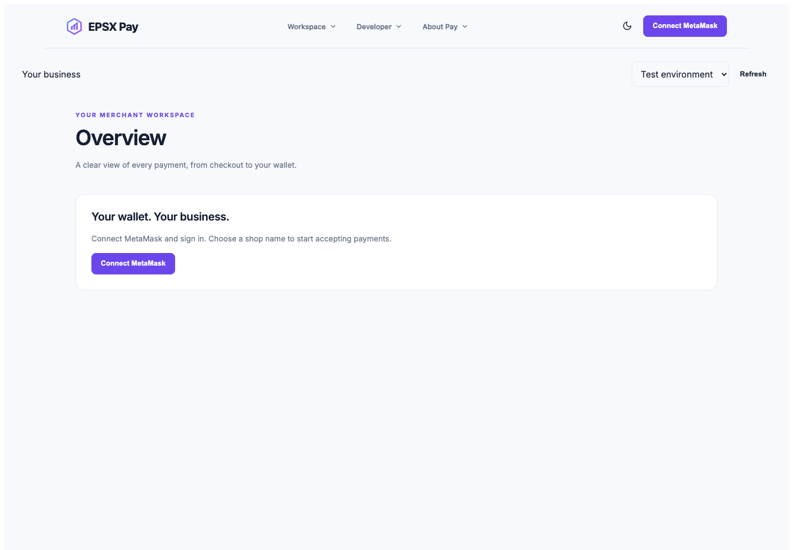
ภาพ 12 • Merchant Overview /dashboard?environment=test • ก่อนเข้าสู่ระบบ| เมนู | วิธีใช้งานหลัก |
|---|
| Packages | กรอกชื่อ เงื่อนไข ราคา USDT/USDC ระยะเวลา (ถ้ามี) และสถานะเปิดขาย แล้วกด Save package |
| Payment links | ระบุ Item name, Amount, Token, วันหมดอายุ และจำนวนครั้ง (ถ้าจำกัด) แล้วกด Create link และ Open link เพื่อเปิดลิงก์ |
| Payments | เปิดรายละเอียด ตรวจ Payment และ Collection แยกกัน ใช้ปุ่มรับเงินหรือคืนเงินเมื่อระบบอนุญาต |
| Settings / Webhooks | แก้ชื่อร้าน จัดการ API keys และปลายทางแจ้งผล HTTPS สำหรับเชื่อมระบบร้านค้า |
ตรวจ Test/Live ก่อนเริ่มงาน การรับเงินเข้ากระเป๋าอาจต้องลงลายเซ็นและมีค่า gas การคืนเงินต้องมีเงินครบตามเงื่อนไข คู่มือนี้ไม่ได้ทดสอบการรับหรือคืนเงินจริง
EPSX / คู่มือใช้งานภาพรวม 14 กันยายน 256908 / QUICK HELP
แก้ปัญหาเบื้องต้นและขอบเขตคู่มือ
ใช้ข้อมูลต่อไปนี้เพื่อตรวจอาการ ก่อนส่งเรื่องให้ทีมดูแล
| อาการ | สิ่งที่ควรตรวจ |
|---|
| เชื่อมต่อกระเป๋าไม่ได้ | เปิดและปลดล็อกกระเป๋า ตรวจบัญชีที่เลือก แล้วลองเข้าสู่ระบบอีกครั้ง หากกดยกเลิกลายเซ็น ระบบจะยังไม่เข้าสู่บัญชี |
| กลับมาหน้า Sign in | ลงชื่อเข้าใช้ใหม่ด้วยกระเป๋าเดิม แล้วเปิดเมนูที่ต้องการอีกครั้ง |
| เข้า Admin ไม่ได้ | ตรวจว่ากระเป๋านั้นได้รับสิทธิ์ผู้ดูแล การเชื่อมต่อกระเป๋าอย่างเดียวไม่ทำให้มีสิทธิ์ Admin |
| เห็นบริษัทไม่ครบ | ตรวจ Country และช่วงอันดับที่เข้าถึงได้ ผลลัพธ์ว่างต่างจากบริการผิดพลาด ลองเลือกประเทศอื่นหรือล้างตัวกรอง |
| ชำระแล้วสถานะยังไม่เปลี่ยน | ตรวจรายการซื้อหรือ Payments และ Test/Live เก็บเลขอ้างอิงรายการกับ transaction hash เพื่อแจ้งทีมดูแล |
ขอบเขตที่ตรวจในครั้งนี้
เปิดหน้าเว็บจริง 10 เส้นทางบน localhost ของระบบ Development ได้ HTTP 200 และเลือกใช้ภาพหน้าจอ 12 ภาพ โดยภาพเต็มหน้ามีขนาด 1440 × 1000 พิกเซล และภาพการ์ดหุ้นจับเฉพาะองค์ประกอบ ภาพทั้งหมดถ่ายจากเบราว์เซอร์โดยเปิด JavaScript ไม่ได้สร้างภาพจำลองหรือแก้ข้อมูลในภาพ เพิ่มการลองเลือกประเทศและกดหัวใจจากการ์ดหุ้นบนหน้า Analytics
ไม่ได้ใช้บัญชีที่ลงชื่อเข้าใช้ ไม่ได้สร้าง API key ซื้อแพ็กเกจ สร้างร้านค้า ชำระเงิน หรือแก้ข้อมูล Admin ขั้นตอนหลังเข้าสู่ระบบเป็นคำแนะนำจาก UI และคู่มือในโครงการ ไม่ใช่รายงานผลทดสอบครบทุกขั้นตอน
แหล่งอ้างอิงในโครงการ
shared/rust/dioxus_ui/src/routes.rs
shared/rust/dioxus_ui/src/components/stock_data_card.rs
shared/rust/dioxus_ui/src/pages/analytics.rs
shared/rust/dioxus_ui/src/fullstack/admin_auth.rs
shared/rust/dioxus_ui/src/pages/portfolio/hydrated.rs
shared/rust/dioxus_ui/src/fullstack/pay/ui.rs
หน้า /docs/merchant ของ EPSX Pay และ /developer/docs ของ EPSX
เอกสารฉบับภาพรวม วันที่ 14 กันยายน 2569 • ไฟล์ PDF และต้นฉบับจัดเก็บบน branch development • ไม่มีการใช้ bypass หรือเปลี่ยนเส้นทาง production